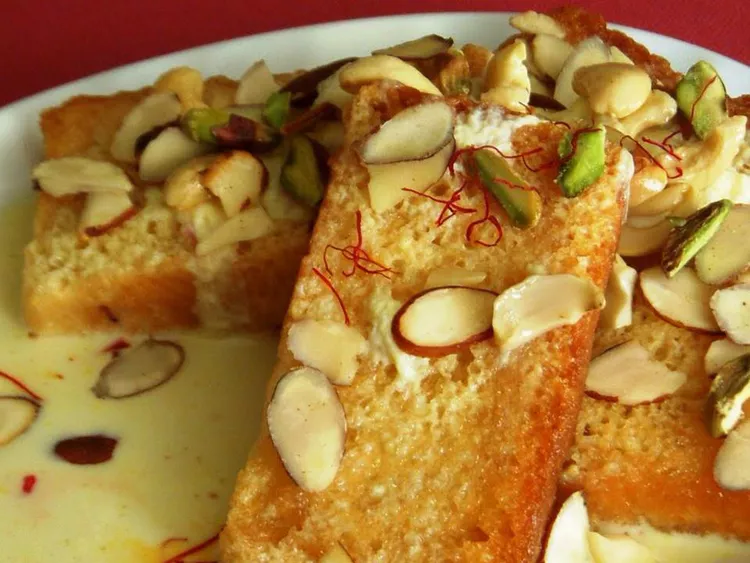

Shahi Tukda Recipe
This is a very famous Hyderabadi dish and is a very simple, but rich dessert. It is great for a large dinner party as the recipe can be easily multiplied to make more. It is best eaten chilled. If available, you can add a few drops of Kewra essence to the milk mixture once it has cooled.

Ingredients
- 1 quart oil for deep frying
- 8 slices white bread, crusts removed and cut into 4 squares
- ¼ cup cashews
- ¼ cup sliced almonds
- 2 tablespoons pistachio nuts
- 1 ¼ cups whole milk
- 5 tablespoons evaporated milk
- ¾ cup white sugar
- 1 teaspoon ground cardamom
- 1 pinch saffron
Directions
Steps
- Heat oil in a deep-fryer or large saucepan to 350 degrees F (175 degrees C). Fry the bread slices in the hot oil until deep, golden brown; drain on a plate lined with paper towels. Fry the cashews, almonds, and pistachio nuts in the hot oil until golden brown; remove from oil and set aside to cool. Chop roughly.
- Bring the milk to a gentle boil in a heavy-bottomed pan over medium-low heat; continue boiling until the volume of milk reduces by about half. Pour the evaporated milk into the pan and add the sugar, cardamom, and saffron; simmer together 5 to 10 minutes. Remove from heat and allow to cool completely.
- Arrange the fried bread pieces in a shallow dish large enough to allow them to be laid in a single layer. Evenly pour the milk mixture over the bread. Scatter the chopped nuts over the bread. Chill in refrigerator until completely cold, 1 to 2 hours.